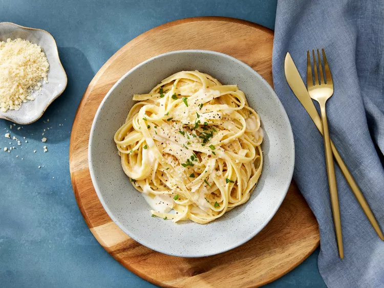

Fettuccine Alfredo

This is a classic Fettuccine Alfredo recipe that is quick and easy to
make. It features a creamy sauce made with butter, heavy cream, and
Parmesan cheese, served over fettuccine pasta.
Ingredients
- 24 ounces dry fettuccine pasta
- 1 cup butter
- ¾ pint heavy cream
- salt and pepper to taste
- 1 dash garlic salt
- ¾ cup grated Romano cheese
- ½ cup grated Parmesan cheese
Steps
- Gather all ingredients.
-
Bring a large pot of lightly salted water to a boil. Add fettuccine
pasta and cook for 8 to 10 minutes or until al dente; drain.
-
Melt butter into cream in a large saucepan over low heat; add salt,
pepper, and garlic salt.
-
Increase the heat to medium; stir in grated Romano and Parmesan cheese
until melted and sauce has thickened.
-
Add cooked pasta to sauce and toss until thoroughly coated; serve
immediately.
Home